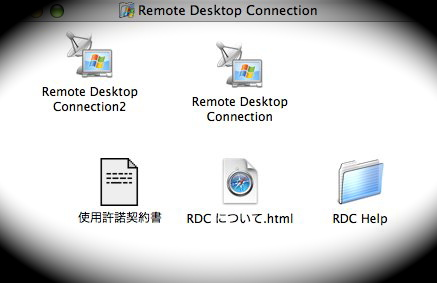
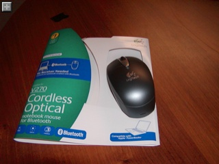
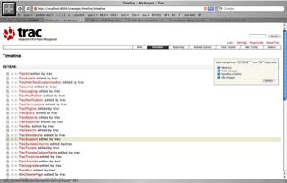
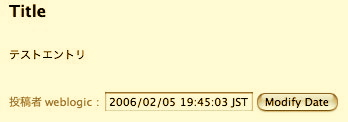

{kind=link}
Microsoft の Remote Desktop Connection はそこそこのパフォーマンスでリモートの Windows を動かせて便利！
でも残念ながら同時に一つの PC にしか接続できない。
クライアントアプリを２つ起動すれば・・と思えば Mac はアプリケーション一つに付きプロセスが一つになるようロックされてる。
まぁ、それはそれで間違った設計ではないけどちょっと不便。
２つ以上の PC に同時に接続するソリューションを発見しました。
カラクリは簡単。RDC Client を複製するだけ。

複製された RDC Client
必要な数だけクライアントを複製すれば好きな数だけ接続できます。
#シンボリックリンクやエイリアスを張ってもオリジナルを解決しちゃうので複数起動できません。
２つ起動してるとこ
ちなみにクライアントアプリのサイズは 904 KB なのでディスク容量が問題になることはなさそう。
{kind=link}
近射用のカタマリ、Black-Hole がついに我が家に到着！
これで練習し放題！
今日は171本うちました。
貫通することもなく、抜きにくくもなく、良い感じ。
CompuUSAをウロチョロしていたら Logitech V270 なるマウスを発見！
これは探し求めていた
1. 左右対象
左ききなので
2. Bluetooth 対応
せっかくノートにBluetooth内蔵してるんだから！
3. レシーバ不要
まぁ、Bluetooth対応と同じことだけど
4. 光学式
最初は気持ち悪かったけど、今では慣れた
5. Bluetoothレシーバ非添付
いや、ノートに内蔵してるのにいちいちUSBのレシーバいらないです
6. クレイドル不要
ばかでかい充電クレイドルはいらない
といった６つの要素を兼ね備えた品物ではないですか。
値段は $49 と Bluetooth 対応マウスとしてはたぶんお値頃。
サンフランシスコへはマウスを忘れて、トラックパッドを活用しすぎて人差し指の腹がやや擦れていたくなってきたのでちょうど良かったです。

念願のBluetooth対応マウス - V270
形はCordless Optical Mouse for Notebooksを踏襲した感じ。やや角張っている。
重さはコードレスマウスとしては標準的か、やや軽いくらい。
電池は単三二本で動く。付属しているのはアメリカ製なだけあって duracell のだった。
Mac OSX の[システム環境設定 > キーボードとマウス > Bluetooth] ですんなり認識されました。
お馴染みの Logicool Center では認識されないみたいで、システム環境設定を使うのが正攻法らしい。
電池がどれくらいもつのかはわからないけど、on/off スイッチが付いていたり、シンプルなポーチが付いていたりと持ち運びに関して気配りが効いている感じで好感が持てる。
ちなみに電池は3ヶ月もつとのこと。
寝袋みたいで暖かそうな付属ポーチ
日本のサイトには載っていないのでまだ米国でしか発売されてないのかな？
・米Logitech、スマートマウスやデュアルレーザー搭載機など新製品4機種
マウスマニアとして良い買い物が出来た気がします。
日本からも Amazon.com で買えると思う。
{kind=link}
{kind=link}
・・・と思ったけど日本への発送はだめっぽい。
こちら↓のお店は海外発送してます。
http://www.jr.com/
追記:
つかってみた感想はこちら
・Logitech® V270 所感
サーカスサーカスでインターネットが使えればちゃんとその日のうちに書けたんだけど・・・・。
mod_python の設定はこんな感じ。
Alias /tracrepo /sw/share/trac/htdocs/
LoadModule python_module modules/mod_python.so
<Location "/tracrepo">
SetHandler mod_python
PythonHandler trac.web.modpython_frontend
PythonOption TracEnv /Users/yusukey/tracrepo
#PythonHandler trac.ModPythonHandler
#PythonOption TracUriRoot "/tracrepo"
#PythonOption TracEnvParentDir /Users/yusukey/tracrepo
</Location>
コメントアウトされている設定は古いバージョンで必要な設定だったりするものらしく、やや試行錯誤した名残。
うまく動いたぞ、と思えば "timeline" 等のページでエラーがでる。libexpat というライブラリは、バージョン6が必要なのにバージョン２があると。
libexpat は C のストリーミングベースの XML パーサらしい。
traceback(Javaでうスタックトレースのことらしい)どうも Subversion のライブラリ内でダイナミックライブラリをロードするあたりでエラーがでてるらしい。
Trac detected an internal error:
Failure linking new module: /sw/lib/python2.4/site-packages/libsvn/_fs.so: Library not loaded: /sw/lib/libexpat.0.dylib
Referenced from: /sw/lib/python2.4/site-packages/libsvn/_fs.so
Reason: Incompatible library version: _fs.so requires version 6.0.0 or later, but libexpat.0.dylib provides version 2.0.0
Web上のリソースをしらべてみると、 otool ってのでバージョンを確認してみろとある。
$ otool -L /sw/lib/libexpat.0.dylib
/sw/lib/libexpat.0.dylib:
/sw/lib/libexpat.0.dylib (compatibility version 6.0.0, current version 6.0.0)
/usr/lib/libSystem.B.dylib (compatibility version 1.0.0, current version 88.0.0)
/usr/lib/libmx.A.dylib (compatibility version 1.0.0, current version 92.0.0)
うーん、問題なく要求されてる version 6.0.0 に対応しているっぽい。
tracd でスタンドアロンでの起動はうまくいくので、Apache 周りで問題があるはず。
探してみると apache2.0.55/lib/ に libexpat.0.dylib があった。
$ otool -L /Users/yusukey/apache2.0.55/lib/libexpat.0.dylib
/Users/yusukey/apache2.0.55/lib/libexpat.0.dylib:
/Users/yusukey/apache2.0.55/lib/libexpat.0.dylib (compatibility version 2.0.0, current version 2.0.0)
/usr/lib/libSystem.B.dylib (compatibility version 1.0.0, current version 88.1.5)
なるほど。Apache が バージョン 2 の libexpat をロードしているのでしょう。
Apache に Fink のライブラリを使わせるにはってことで調べたら FAQ に辿り着いた。(ここに辿り着くまで約半日・・・)
・The Fink F.A.Q. - Q8.3: Fink でインストールしたソフトウェアを使って、自分で何かをコンパイルするにはどうしたらいいのですか?
http://fink.sourceforge.net/faq/faq.ja.html#usage-general.compile-myself
というわけで、LDFLAGS とかを設定して Apache と mod_python を再コンパイルしたところようやく動作！

{kind=link}
CGI で動かしたときよりはなんとなく早い感じ。
G4 1.5GHz のローカル環境ではなんとなく、でも G3 300MHz のサーバ環境では違いは明らかでしょう。
今日の試合は午後 1:00 から。
公開練習と、１日目の試合でぐったりなので朝はゆっくり寝坊してた。体鈍っております。
妻は早起きしてナショナルコーチの Lee Kishik のセッションを聞きにいってた。
なかなかためになって刺激されたようで、やる気をもてあましてた。次回は一緒に出場かな？
２日目は昨日と同じ的。同的の人も同じ。
まぁ、昨日より気持ちよくうてて、50点近くあがった。
しかし昨日の点がそもそも良くないので全く持ってショボい点数。
外でやってた3Dのアトラクション。空気圧かなんかで飛び出したり移動したりする
夜は急遽チケットを手配したPenn & Tellerのマジックショーを見た。
３年前に一度見たけれども大分忘れてた。っていうか７割方はネタが変わってたと思う。
トークネタは30%くらいしか理解できなかった気がする・・・。精進精進。
それなりに有名だと思う２人
ショーの後はもう夜遅かったけど、明日の試合開始時間を確認するためもう一度試合会場のリビエラホテルへ。明日は12:30らしい。
今日の試合は午後 1:00 から。
公開練習と、１日目の試合でぐったりなので朝はゆっくり寝坊してた。体鈍っております。
妻は早起きしてナショナルコーチの Lee Kishik のセッションを聞きにいってた。
なかなかためになって刺激されたようで、やる気をもてあましてた。次回は一緒に出場かな？
２日目は昨日と同じ的。同的の人も同じ。
まぁ、昨日より気持ちよくうてて、50点近くあがった。
しかし昨日の点がそもそも良くないので全く持ってショボい点数。
外でやってた3Dのアトラクション。空気圧かなんかで飛び出したり移動したりする
夜は急遽チケットを手配したPenn & Tellerのマジックショーを見た。
３年前に一度見たけれども大分忘れてた。っていうか７割方はネタが変わってたと思う。
トークネタは30%くらいしか理解できなかった気がする・・・。精進精進。
それなりに有名だと思う２人
ショーの後はもう夜遅かったけど、明日の試合開始時間を確認するためもう一度試合会場のリビエラホテルへ。明日は12:30らしい。
試合は7:30 開始でだいたい 9:30 くらいに終わった。
眠いので部屋に戻って一休みしてからLas Vegas Premium Outletへ。
ラスベガス内は、去年はなかったっぽい the Deuce って二階建てバスが走っていて便利になった。10月27日に運行開始したっぽい。
一人$5で２４時間乗り放題なので大変オススメ。
アウトレットはなかなかでかかった。といっても日本でよく行く佐野のアウトレットとそれほど規模は変わらないかな？
アディダスで靴を買い、駒沢でボロボロのドロドロになっていた靴から履き替えた。
他には妻の希望で台所用具をタンマリ購入。おいしいお菓子作ってください。
夜は事前に予約してあった O を見るため Bellagio へ行った。
will call なので Bellagio の box office でチケットをピックアップして、減りまくりの腹をなだめるためそのままバッフェへ。
ここはなんといってもカニが良かった！去年 Rio で食べたカニはあまり食べさせたくないのか、ややしょっぱく茹でてあったけど、Bellagio のはそこそこイケる。
身もとりやすいように全て半分に割ってあるしでとにかく食べまくった。
ベラージョのバッフェでカニを食べまくり
しかし寿司はイマイチ。
rice ball machine とかいう機械でニュルニュルっと米が押し出され、一列に並べた握りの上にネタをペケペケと人間が貼り付けていく感じで見た目にもまずそう。握り（握ってないけど）が固すぎ。
もひとつイマイチなのはなんと松阪牛。
記憶の限り松阪牛たべたことはないけれども、ジューシーな割にはなんだか固く、ぶっちゃけおいしくない。
焼き方が良くないのか、偽物なのか知らないが、オススメしない。
デザートはケーキ、フルーツが大量にあり大満足！
たらふく食べたあとは O のシアターへ。
O はラスベガスでも一番人気のあるショーで、過去に訪問した際はチケットが取れなかった。
今回はさすがに２週間前くらいに予約したけど、それでも一番安い(=見にくいシート)チケットしかとれなかった。
ショーの内容はサーカスとシンクロナイズドスイミングを合わせたようなもの。
なかなか良かった。
でも妻も私も去年見た Blue Man Groupの方が好み。
待望のO
試合は7:30 開始でだいたい 9:30 くらいに終わった。
眠いので部屋に戻って一休みしてからLas Vegas Premium Outletへ。
ラスベガス内は、去年はなかったっぽい the Deuce って二階建てバスが走っていて便利になった。10月27日に運行開始したっぽい。
一人$5で２４時間乗り放題なので大変オススメ。
アウトレットはなかなかでかかった。といっても日本でよく行く佐野のアウトレットとそれほど規模は変わらないかな？
アディダスで靴を買い、駒沢でボロボロのドロドロになっていた靴から履き替えた。
他には妻の希望で台所用具をタンマリ購入。おいしいお菓子作ってください。
夜は事前に予約してあった O を見るため Bellagio へ行った。
will call なので Bellagio の box office でチケットをピックアップして、減りまくりの腹をなだめるためそのままバッフェへ。
ここはなんといってもカニが良かった！去年 Rio で食べたカニはあまり食べさせたくないのか、ややしょっぱく茹でてあったけど、Bellagio のはそこそこイケる。
身もとりやすいように全て半分に割ってあるしでとにかく食べまくった。
ベラージョのバッフェでカニを食べまくり。手前は一見ウマそうな松阪牛
しかし寿司はイマイチ。
rice ball machine とかいう機械でニュルニュルっと米が押し出され、一列に並べた握りの上にネタをペケペケと人間が貼り付けていく感じで見た目にもまずそう。握り（握ってないけど）が固すぎ。
もひとつイマイチなのはなんと松阪牛。
記憶の限り松阪牛たべたことはないけれども、ジューシーな割にはなんだか固く、ぶっちゃけおいしくない。
焼き方が良くないのか、偽物なのか知らないが、オススメしない。
デザートはケーキ、フルーツが大量にあり大満足！
たらふく食べたあとは O のシアターへ。
O はラスベガスでも一番人気のあるショーで、過去に訪問した際はチケットが取れなかった。
今回はさすがに２週間前くらいに予約したけど、それでも一番安い(=見にくいシート)チケットしかとれなかった。
ショーの内容はサーカスとシンクロナイズドスイミングを合わせたようなもの。
なかなか良かった。
でも妻も私も去年見た Blue Man Groupの方が好み。
待望のO
今日は試合本番1日目。
朝7:30〜ということで6:30くらいに起きて眠い目をこすって会場へ。
張り出されている的番を確認して、Gene に言われた通り上側に的を張る。
同的は細身と太身の女子高生（？）とノボっとした大学生っぽいの。
ノボっとしたのは試射で立ちを間違えて初回一的三人立つハメになった。
全日ターゲットじゃないっつーの。
的紙を貼り終えたトコ。眠そう
妻も指摘していたけど同立ちだった子は名前が KUCHENBROD と、ドイツっぽい。
聞いてみれば祖父がドイツ人だとのこと。
でもドイツ語はしゃべれず、第二外国語で習っているけれども苦手。
見た目じゃわからんけど、そういうのアメリカにはゴロゴロしてるのかね？Geneも何代前かにドイツ人がいるとか言ってた。
ドイツ語が堪能な妻によると KUCHENBROD はケーキ-パンの意だそうで、我々の中では勝手にケーキパンちゃんというあだ名で呼んでいた。
ケーキパンと私
日本でいつもやってる試合とちょっと違う点をいくつか
・下の的をうつほうが常に先立ち
AB-CD->CD-ABじゃなくて、CD-AB->CD-AB・・って感じ。
・５エンドで上下的を入れ替え
つまり的紙を上に貼ったら試射を含めて７回連続後立ちで上をうつ。
的紙を貼り替えて、５回連続先立ちで下をうつ。
・スコアの修正はスコアラーができる
ケーキパンはなんと鉛筆でスコアを書いていた。
・点数のコールは英語で(当たり前！)
小計は 21 - twenty one、累計は 108 - one o five、230 - two tirty てな感じで読むみたい。流でスコアリングを担当するハメになった。
点数コールを聞き間違えることもなく、確認の読み上げの発音が悪くて聞き直されることなく思ったよりスムース。
結果の方はというと・・最近の調子通り、試合になるとタイミングがくずれまくりダメダメ。うーむ。
なんだかカッコイイショット by 妻
Apache と連携する前にとりあえず動かしてみた。
trac 付属のシンプルな Web サーバで動かすには
$ tracd --port 8000 /Users/yusukey/tracrepoとするだけ。

trac 付属 Web サーバで動いてるとこ
$ mkdir svn
$ svnadmin create /Users/yusukey/svn
$ trac-admin tracrepo initenv
Creating a new Trac environment at /Users/yusukey/tracrepo
Trac will first ask a few questions about your environment
in order to initalize and prepare the project database.
Please enter the name of your project.
This name will be used in page titles and descriptions.
Project Name [My Project]>
Please specify the connection string for the database to use.
By default, a local SQLite database is created in the environment
directory. It is also possible to use an already existing
PostgreSQL database (check the Trac documentation for the exact
connection string syntax).
Database connection string [sqlite:db/trac.db]>
Please specify the absolute path to the project Subversion repository.
Repository must be local, and trac-admin requires read+write
permission to initialize the Trac database.
Path to repository [/var/svn/test]> /Users/yusukey/svn
Please enter location of Trac page templates.
Default is the location of the site-wide templates installed with Trac.
Templates directory [/sw/share/trac/templates]>
Creating and Initializing Project
Configuring Project
trac.repository_dir
trac.database
trac.templates_dir
project.name
Installing default wiki pages
/sw/share/trac/wiki-default/CamelCase => CamelCase
/sw/share/trac/wiki-default/RecentChanges => RecentChanges
/sw/share/trac/wiki-default/SandBox => SandBox
/sw/share/trac/wiki-default/TitleIndex => TitleIndex
/sw/share/trac/wiki-default/TracAccessibility => TracAccessibility
/sw/share/trac/wiki-default/TracAdmin => TracAdmin
/sw/share/trac/wiki-default/TracBackup => TracBackup
/sw/share/trac/wiki-default/TracBrowser => TracBrowser
/sw/share/trac/wiki-default/TracCgi => TracCgi
/sw/share/trac/wiki-default/TracChangeset => TracChangeset
/sw/share/trac/wiki-default/TracEnvironment => TracEnvironment
/sw/share/trac/wiki-default/TracFastCgi => TracFastCgi
/sw/share/trac/wiki-default/TracGuide => TracGuide
/sw/share/trac/wiki-default/TracImport => TracImport
/sw/share/trac/wiki-default/TracIni => TracIni
/sw/share/trac/wiki-default/TracInstall => TracInstall
/sw/share/trac/wiki-default/TracInterfaceCustomization => TracInterfaceCustomization
/sw/share/trac/wiki-default/TracLinks => TracLinks
/sw/share/trac/wiki-default/TracLogging => TracLogging
/sw/share/trac/wiki-default/TracModPython => TracModPython
/sw/share/trac/wiki-default/TracNotification => TracNotification
/sw/share/trac/wiki-default/TracPermissions => TracPermissions
/sw/share/trac/wiki-default/TracPlugins => TracPlugins
/sw/share/trac/wiki-default/TracQuery => TracQuery
/sw/share/trac/wiki-default/TracReports => TracReports
/sw/share/trac/wiki-default/TracRoadmap => TracRoadmap
/sw/share/trac/wiki-default/TracRss => TracRss
/sw/share/trac/wiki-default/TracSearch => TracSearch
/sw/share/trac/wiki-default/TracStandalone => TracStandalone
/sw/share/trac/wiki-default/TracSupport => TracSupport
/sw/share/trac/wiki-default/TracSyntaxColoring => TracSyntaxColoring
/sw/share/trac/wiki-default/TracTickets => TracTickets
/sw/share/trac/wiki-default/TracTicketsCustomFields => TracTicketsCustomFields
/sw/share/trac/wiki-default/TracTimeline => TracTimeline
/sw/share/trac/wiki-default/TracUnicode => TracUnicode
/sw/share/trac/wiki-default/TracUpgrade => TracUpgrade
/sw/share/trac/wiki-default/TracWiki => TracWiki
/sw/share/trac/wiki-default/WikiDeletePage => WikiDeletePage
/sw/share/trac/wiki-default/WikiFormatting => WikiFormatting
/sw/share/trac/wiki-default/WikiHtml => WikiHtml
/sw/share/trac/wiki-default/WikiMacros => WikiMacros
/sw/share/trac/wiki-default/WikiNewPage => WikiNewPage
/sw/share/trac/wiki-default/WikiPageNames => WikiPageNames
/sw/share/trac/wiki-default/WikiProcessors => WikiProcessors
/sw/share/trac/wiki-default/WikiRestructuredText => WikiRestructuredText
/sw/share/trac/wiki-default/WikiRestructuredTextLinks => WikiRestructuredTextLinks
/sw/share/trac/wiki-default/WikiStart => WikiStart
Indexing repository
---------------------------------------------------------------------
Project environment for 'My Project' created.
You may now configure the environment by editing the file:
/Users/yusukey/tracrepo/conf/trac.ini
If you'd like to take this new project environment for a test drive,
try running the Trac standalone web server `tracd`:
tracd --port 8000 /Users/yusukey/tracrepo
Then point your browser to http://localhost:8000/tracrepo.
There you can also browse the documentation for your installed
version of Trac, including information on further setup (such as
deploying Trac to a real web server).
The latest documentation can also always be found on the project
website:
http://projects.edgewall.com/trac/
Congratulations!
機能的にはよさげだけどもアーキテクチャが java じゃなくて導入をためらっていた Trac。
どうやら fink を使うと簡単にインストールできるそうなので試してみた。
参考サイト:
Trac - Installing With Fink
まず fink を最新版に更新。
各種パッケージをダウンロードするのにどのミラーサイトを使うか尋ねられるけど全部デフォルトのままで enter を押しまくった。
$ fink selfupdate
rsync -az -q rsync://master.us.finkmirrors.net/finkinfo//TIMESTAMP /sw/fink/TIMESTAMP.tmp
I will now run the rsync command to retrieve the latest package descriptions.
---------------snip-------------
The core packages have been updated. You should now update the other packages using commands like
'fink update-all'.
SQLite をインストール
$fink install sqlite sqlite-dev sqlite-shlibs
---------------snip-------------
Setting up sqlite-shlibs (2.8.5-13) ...
Setting up sqlite-dev (2.8.5-13) ...
Setting up sqlite (2.8.5-13) ...
Subversion をインストール
$fink install svn-ssl svn-client-ssl svn-ssl-swig-py23
---------------snip-------------
If any of the above dpkg error messages mention conflicting packages or missing dependencies --
for example, telling you that the package fink-buildlock-python24-1:2.4.1-102 conflicts with
something else -- fink has probably gotten confused by trying to build many packages at once. Try
building just this current package python24 (i.e, "fink build python24"). When that has completed
successfully, you could retry whatever you did that led to the present error.
Regardless of the cause of the lock failure, don't worry: you have not wasted compiling time!
Packages that had been completely built before this error occurred will not have to be recompiled.
Failed: buildlock failure
10時間くらいかかった挙げ句なんか失敗してる。Mac OSX 10.4 に入ってる phthon 2.3 を指定したのになぜ 2.4 周りで失敗？
っという疑問は放置したまま言われるがまま python24 をビルドしてみる
$ fink build python24
Selecting previously deselected package blt-dev.
(Reading database ... 17688 files and directories currently installed.)
Unpacking blt-dev (from .../blt-dev_2.4z-12_darwin-powerpc.deb) ...
Setting up blt-dev (2.4z-12) ...
で、もう一度 Subversion インストールを挑戦。
$ fink install svn-ssl svn-client-ssl svn-ssl-swig-py23
---------------snip-------------
Selecting previously deselected package svn-ssl-swig-py23.
(Reading database ... 31996 files and directories currently installed.)
Unpacking svn-ssl-swig-py23 (from .../svn-ssl-swig-py23_1.2.3-12_darwin-powerpc.deb) ...
Setting up svn-ssl-swig-py23 (1.2.3-12) ...
ようやく Subversion をインストールできたっぽい。
一応最新版になってるか試してみろ、とのことなので update-all
$ fink update-all
Password:
Information about 2000 packages read in 2 seconds.
No packages to install.
特にアップデートされることはなし。
で、いよいよ trac をインストール。
$ fink install trac-py23
Information about 2000 packages read in 1 seconds.
Failed: no package found for specification 'trac-py23'!
見つからない・・。
調べてみたら、unstable パッケージなんだよと。
Re: trac installation failure on mac os X
fink.confを書き換えて Trees: ってとこに unstable/main unstable/crypto というおまじないを加えると unstable が検索対象になるらしい。
Q5.8: There's this package in unstable that I want to install, but the fink command just says 'no package found'. How can I install it?
$ sudo vi /sw/etc/fink.conf
Password:
# Fink configuration, initially created by bootstrap.pl
Basepath: /sw
RootMethod: sudo
Trees: local/main stable/main stable/crypto unstable/main unstable/crypto
Distribution: 10.4-transitional
Mirror-apt: http://bindist.finkmirrors.net/bindist
Mirror-cpan: ftp://ftp.funet.fi/pub/languages/perl/CPAN/
Mirror-ctan: ftp://tug.ctan.org/tex-archive/
Mirror-debian: http://ftp.debian.org/debian/
Mirror-gimp: ftp://ftp.gimp.org/pub/gimp/
Mirror-gnome: ftp://ftp.gnome.org/pub/GNOME/
Mirror-gnu: ftp://ftp.gnu.org/gnu
Mirror-kde: ftp://ftp.kde.org/pub/kde/
Mirror-master: http://distfiles.master.finkmirrors.net/
Mirror-rsync: rsync://master.us.finkmirrors.net/finkinfo/
Mirror-sourceforge: http://west.dl.sourceforge.net/sourceforge/
MirrorContinent: nam
MirrorCountry: nam-us
MirrorOrder: MasterFirst
ProxyPassiveFTP: true
UseBinaryDist: true
Verbose: 1
SelfUpdateMethod: rsync
Mirror-apache: http://www.apache.org/dist
で、なにやら fink のパッケージ情報を更新して、
fink selfupdate; fink index; fink scanpackages
もう一度インストールをお願いしたら完了。
$ fink install trac-py23
おまじないだらけでイマイチ意味分かってないけどとりあえずインストールできたっぽい。
次は Subversion のリポジトリ作成。
Pebbl 2.0 をリリースするらしい。
Pebble 2.0 - Pebble 2.0 is alive
あまり動きがなくて興味を失っていたのではないかと心配していたけど、裏でコソコソと作ってたらしい。ニクい！
主な違いは以下の通り。今週末を目処にリリースするとのこと。
・新しい標準ベース
J2SE5.0 / JSP 2.0 / Servlet 2.4 ベースで今まで以上に軽快に動作するとのこと。
また、 JSP2.0 の EL をつかってかなりシンプルに記述できているらしい。
・新しいセキュリティ機構
Acegi security system for Spring(何それ?)を使って、シンプルかつ拡張性の高いセキュリティ機構をもっているとのこと。
確かに J2EE のロールベースだと、 Tomcat とかで動かしている場合はユーザのメンテナンスとか大変そう。
自宅サーバで使っているぶんにはそうそうユーザのメンテナンスはしないのであまり関係ないかな。
・新しいユーザインターフェース
恐らく管理画面が変わるんでしょう？
しかし、WebLogic Free Edition で動かなくなるのは悩ましい。4.x 以降ほとんど触っていない Tomcat をインストールするか・・・。
#Free Edition は J2EE1.3 ベースの WLS8.1 のみ。WLS9.x は scale-limited license がない
最初のコンピュータと言われている ENIAC の貴重な映像。
CNET Japan - 「これがENIACだ」
当初軍事用途向けに開発されたことは知っていたけど、１０進数で計算していたというのは知らなかった。興味深い。
モダンなコンピュータより人間味がある？
先の研究を元にややサムネイルを高画質化。
あと、「拡大できるよ」ってわかりやすいようにサムネイルにプラス型のバッジを付けるようにした。
このバッジはクラスパス内の enlarge.gif を置き換えることで変更可能。
バッジをつけたくない場合は enlarge.gif を削除すれば Ok ・・・なように作っているつもりだけれども未検証。
また、最近巷で話題の Lightbox に対応。リンクに rel="lightbox"って埋め込まれる。
Pebble に Lightbox をインストールするには /common/jsp/header.jspf を書き換える必要があった。
うーん、Lightbox カッコイー！
ダウンロードはこちらから。
参考サイト:
・Lightbox
http://www.huddletogether.com/projects/lightbox/
・Lightbox Plus
http://serennz.cool.ne.jp/sb/sp/lightbox/index_ja.html
やっぱりサムネイルの品質もう少しなんとかならないのかってことで調べた。
どうやら ImageWriteParam っていうクラスで指定するらしい。
これを使う場合は ImageIO クラスのスタティックメソッドでカジュアルに書き出すことはできず、以下のように若干冗長になる。
private static void graphics2dImageOutputStream() throws Exception {
int width = 320;
int height = 240;
FileInputStream fis = new FileInputStream("original.jpg");
BufferedImage image = ImageIO.read(fis);
fis.close();
BufferedImage shrinkImage
= new BufferedImage(width,height, image.getType());
Graphics2D g2d = shrinkImage.createGraphics();
g2d.setRenderingHint(RenderingHints.KEY_ALPHA_INTERPOLATION
, RenderingHints.VALUE_ALPHA_INTERPOLATION_QUALITY);
g2d.setRenderingHint(RenderingHints.KEY_ANTIALIASING
, RenderingHints.VALUE_ANTIALIAS_ON);
g2d.setRenderingHint(RenderingHints.KEY_COLOR_RENDERING
, RenderingHints.VALUE_COLOR_RENDER_QUALITY);
g2d.setRenderingHint(RenderingHints.KEY_DITHERING
, RenderingHints.VALUE_DITHER_ENABLE);
g2d.setRenderingHint(RenderingHints.KEY_TEXT_ANTIALIASING
, RenderingHints.VALUE_TEXT_ANTIALIAS_ON);
g2d.setRenderingHint(RenderingHints.KEY_RENDERING
, RenderingHints.VALUE_RENDER_QUALITY);
g2d.setRenderingHint(RenderingHints.KEY_INTERPOLATION
, RenderingHints.VALUE_INTERPOLATION_BILINEAR);
g2d.setRenderingHint(RenderingHints.KEY_FRACTIONALMETRICS
, RenderingHints.VALUE_FRACTIONALMETRICS_ON);
g2d.setRenderingHint(RenderingHints.KEY_STROKE_CONTROL
, RenderingHints.VALUE_STROKE_NORMALIZE);
g2d.drawImage(image, 0, 0, width, height, null);
ImageWriter writer = null;
Iterator iter = ImageIO.getImageWritersByFormatName("jpg");
if (iter.hasNext()) {
writer = (ImageWriter) iter.next();
}
ImageOutputStream ios
= ImageIO.createImageOutputStream(new File("1.0f.jpg"));
writer.setOutput(ios);
JPEGImageWriteParam iwparam
= new JPEGImageWriteParam(Locale.getDefault());
iwparam.setCompressionMode(ImageWriteParam.MODE_EXPLICIT);
iwparam.setCompressionQuality(1f);
writer.write(null,new IIOImage(shrinkImage,null,null),iwparam);
ios.flush();
writer.dispose();
ios.close();
}
iwparam.setCompressionQuality(1f); の部分で品質を決める。
1.0fが一番品質が高い。
で、パラメータを変えて試した結果がこんなかんじ↓
|
0.75 : 12KB |
0.90 : 20KB |
|
0.95 : 28KB |
1.0 : 60KB |
0.95f くらいがむやみにファイルサイズがでかすぎず、品質も良い感じ。
体感上、品質によって書き出す速度が特に変わることはなかった。
また英語の話。
別れ際の挨拶として使われる "See you ****" という常套句だけどなんとなくこんな↓ニュアンスにとららえてました。
"See you later" = 「またあとでね」
->その日にまた会う機会がある。それなりに知っている間柄で使われる文句。
"See you next time", "See you!", "See ya!" = 「また今度」
->その日にはたぶん会わない。また出会う予定がある、または社交辞令
ところが、アーチェリー場で挨拶すらしてなかった人に帰り際に "See you later" と言われることが何度かありました。
実は "See you later" も社交辞令的に使われることがあるということでちょっと驚いた。
TSSより
・BEA to Open Source its Kodo Java Persistence APIs
・Interview Series: Kodo—towards an open source EJB 3.0 persistence engine
EJB 3.0ベースの永続化ライブラリをオープンソース化するとのこと。
元々は Kodo という名前の製品で、先日 SolarMetric って会社を買収して手に入れたモノ。
ライセンスは Apache Software License。
WebLogic Server もオープンソースにしちゃえ！
#商用の3rdパーティライブラリがわんさかバンドルされてるので簡単な話じゃないけど
このテのオープンソース製品としては Hibernate が主流だけど、うまいこと競争して互いに磨いていって欲しい。
それなりに理解すれば好き勝手カスタマイズできるのがオープンソース製品の魅力。
でも、かなりプリミティブな永続化ライブラリをいじるのはちょっとヤな感じなので商用ベースで鍛えられた製品を自由に使えるというのは良いのではないかと。
先週の研究成果を元にまた Pebble を改造してみた。
使い方は簡単、ファイル管理画面で画像エントリを作成したいイメージに対して"Post Image"をクリックするだけ。
画像が320x320以上のサイズであれば比率を保ったまま320x320に収まるサムネイルを作成の上、リンクを含んだドラフトエントリを作ってくれる。
複数の画像を含めたい場合は同じ操作を繰り返せばOk。同じドラフトエントリにじゃんじゃか画像を追加してくれます。
また、指定した画像が800x600以上のサイズの場合は比率を保ったまま800x600に収まるサイズの画像を作成し、サムネイルのリンク先となる。
これは拡大イメージが画面からはみ出すのを防ぐため。
とりあえず 320x320、とか800x600、はハードコードされてる。
320x320 以上のサムネイル、または800x600 以上の拡大画像を使いたい場合はそれぞれファイル名を"-thumb.jpg"、"-large.jpg"としておけばOk。
上書き生成はしないようになっているので。
ダウンロードはこちらから。
1. 画像の横にある"Post Image"をクリック
2. 画像付きのドラフトエントリが作成される
3. 自動的に800x600に収まる[オリジナルファイル名-large.jpg]、320x320に収まる[オリジナルファイル名-thumb.jpg]が作成されてる
実際にサムネイル作成をまかせたのがこれ↓
拡大画像にちょっとjpgのノイズが見えるけど、十分でしょう。
どうも画像貼り付け機能は昔からないらしい。
Pebble JP - Pebble1.6.1 - 1.6.2
MovableTypeでは普通に出来てたし、かなり基本的な機能だと思うんだけどなぜか改善要望も見あたらない。
見つからないだけで duplicate になるかもしれないけど投稿しておきました。
PEB-307: ease of posting photologs
追記:06/02/14 15:23
拡大画像が存在しないのにリンクを張ることがあったのを修正。
Pebbleの管理画面でサムネイル作成を可能にするため、ちょっと調査してみました。
検証に使ったのは先週携帯で撮った霧のサンフランシスコ。
1600x1200でサイズは380kb。
このサムネイルは iPhoto で作成したもの。
綺麗な縮小画像を作るにはAreaAveragingScaleFilterを使うのがキレイ！って情報がちらほらある。
どうやら内部的にAreaAveragingScaleFilter を使ってくれるっぽい BufferedImage#getScaledInstance() を使って実験。
直接 AreaAveragingScaleFilter を触るよりコード量が少なさそうなので。
(1)コードはこんな感じ
private static void scaledInstance() throws Exception {
int height = 240;
int width = 320;
FileInputStream fis
= new FileInputStream("./original.jpg");
BufferedImage image = ImageIO.read(fis);
fis.close();
BufferedImage shrinkImage
= new BufferedImage(width, height, image.getType());
shrinkImage.getGraphics()
.drawImage(image.getScaledInstance(width, height
, Image.SCALE_AREA_AVERAGING)
, 0, 0, width, height, null);
ImageIO.write(shrinkImage, "jpg", new File("./2.jpg"));
}
・結果はこんな感じ

まぁそんなシャギーも目立たないし悪くない感じです。
ただやたら時間がかかります。80秒くらい。
パフォーマンスを求めてMovableTypeから移行したのにこれじゃだめですね。
今度はそのままdrawImageする方法。
(2)コードはこんな感じ
private static void graphics2dnohints() throws Exception {
int width = 320;
int height = 240;
FileInputStream fis = new FileInputStream("original.jpg");
BufferedImage image = ImageIO.read(fis);
fis.close();
BufferedImage shrinkImage
= new BufferedImage(width,height, image.getType());
Graphics2D g2d = shrinkImage.createGraphics();
g2d.drawImage(image, 0, 0, width, height, null);
ImageIO.write(shrinkImage, "jpg", new File("graphics2dnohints.jpg"));
}
・結果はこんな感じ

１秒くらいで完了。かなり早いけどあり得ないくらい汚いです。
単に間引いてるだけですね。
じっとAPIを見つめているとGraphics2D#setRenderingHint() ってメソッドが見えてきました。
なんとなくキレイにしてくれそうなオプションを設定して再挑戦。
(3)コードはこんな感じ
private static void graphics2d() throws Exception {
int width = 320;
int height = 240;
FileInputStream fis = new FileInputStream("original.jpg");
BufferedImage image = ImageIO.read(fis);
fis.close();
BufferedImage shrinkImage = new BufferedImage(width,height, image.getType());
Graphics2D g2d = shrinkImage.createGraphics();
g2d.setRenderingHint(RenderingHints.KEY_ALPHA_INTERPOLATION,
RenderingHints.VALUE_ALPHA_INTERPOLATION_QUALITY);
g2d.setRenderingHint(RenderingHints.KEY_ANTIALIASING,
RenderingHints.VALUE_ANTIALIAS_ON);
g2d.setRenderingHint(RenderingHints.KEY_COLOR_RENDERING,
RenderingHints.VALUE_COLOR_RENDER_QUALITY);
g2d.setRenderingHint(RenderingHints.KEY_DITHERING,
RenderingHints.VALUE_DITHER_ENABLE);
g2d.setRenderingHint(RenderingHints.KEY_TEXT_ANTIALIASING,
RenderingHints.VALUE_TEXT_ANTIALIAS_ON);
g2d.setRenderingHint(RenderingHints.KEY_RENDERING,
RenderingHints.VALUE_RENDER_QUALITY);
g2d.setRenderingHint(RenderingHints.KEY_INTERPOLATION,
RenderingHints.VALUE_INTERPOLATION_BILINEAR);
g2d.setRenderingHint(RenderingHints.KEY_FRACTIONALMETRICS,
RenderingHints.VALUE_FRACTIONALMETRICS_ON);
g2d.setRenderingHint(RenderingHints.KEY_STROKE_CONTROL,
RenderingHints.VALUE_STROKE_NORMALIZE);
g2d.drawImage(image, 0, 0, width, height, null);
ImageIO.write(shrinkImage, "jpg", new File("graphics2d.jpg"));
}
・結果はこんな感じ

ん、悪くない。むしろ最初の遅いヤツよりキレイなんじゃないの？
しかも早いです。パフォーマンスは体感的にさっきと変わらない感じ。
ではパフォーマンスをざっと検証。
・コードはこんな感じ
public static void main(String[] args) throws Exception {
long before;
double elapsed;
for (int i = 0; i < 10; i++) {
//hotspotをVMに教えてあげる
scaledInstance();
graphics2dnohints();
graphics2d();
}
before = System.currentTimeMillis();
System.out.println("getScaledInstance()");
scaledInstance();
elapsed = (System.currentTimeMillis() - before) / 1000d;
System.out.println(elapsed + " secs");
before = System.currentTimeMillis();
System.out.println("graphics2dnohints()");
graphics2dnohints();
elapsed = (System.currentTimeMillis() - before) / 1000d;
System.out.println(elapsed + " secs");
before = System.currentTimeMillis();
System.out.println("graphics2d()");
graphics2d();
elapsed = (System.currentTimeMillis() - before) / 1000d;
System.out.println(elapsed + " secs");
}
結果はこんな感じ。
getScaledInstance()
72.756 secs
graphics2dnohints()
0.698 secs
graphics2d()
1.463 secs
PhotoShop Elements の結果も加えて並べてみた。
 iPhoto:2秒くらい - 38 KB |
 PhotoShop Elements2.0(jpeg 最高画質):2秒くらい - 56 KB |
|
(1)getScaledInstance(Image.SCALE_AREA_AVERAGING) 72.756 秒 - 11 KB |
|
|
(2)普通にdrawImage()(レンダリングヒントなし):0.698 秒 - 13 KB |
(3)普通にdrawImage()(レンダリングヒント付き):1.463 秒 - 10 KB |
さすがにiPhotoとPhoto Shopはほぼ互角に綺麗。iPhotoはなぜか若干暗い。
Javaで処理する場合どれがいいかなー・・って愚問ですね。
レンダリングヒント付きでdrawImageが一番品質対時間比に優れてます。
Javaで作ったサムネイルはどれも細い線の再現性がイマイチで、iPhoto のサムネイルに比べやや眠たい感じだけど十分実用的。
しかし(1)より(3)の方が綺麗に見える。50倍くらい早く出来上がってるんだけど。
(1)は(3)に比べファイルサイズがやや大きいにも関わらずjpeg的なブロックノイズが目立ちます。
試合会場はサーカスサーカスホテルからストリップをはさんだちょうど向かい側、リビエラホテルのコンベンションセンター。
エントリーはオンラインで済ませてあるので、受付で名前を言うとルールブックと細かい注意書きのある紙切れを山ほどもらった。
スケジュールにPractice $5 all dayとか書いてあるのでうっすら察していたけれどもやっぱり練習にはお金がかかるらしい。
練習会場の受付でお金を払うと的紙をくれるので、それを空いているマットに貼り付けて練習する仕組み。
17:30くらいだったけど会場はほぼ一杯。
隅の方にようやく空いているマットを見つけ練習開始♪
ほどなく、先ほどのおじさん(Gene Lueck という)がやってきた。
同的で練習しながら色々とコツを教えて貰った。
1. 人のタイミングは気にせず自分のペースでうて
(隣の人がうちおわるのを待ってからセットアップする自分を見て)
日本のインドア大会だと会場の都合から隣の人との距離がメチャメチャ近く、同時にセットアップするのはタブーな場合も。
確かにベガスシュートは大変会場が広いのでそんな心配はないかも。
2. 試合会場には早めについて、上側に的を貼れ
どうやら練習時とおなじく、試合でも自分で的を張るらしい。
で、前半後半でうつ的が上下入れ替わるのだけど、前半上をうって後半下をうつのが楽でしょうと。
なるほどなるほど。
Gene(左)と自分(中)
夕飯もGeneが一緒に食べようということでサーカスサーカスのバッフェへ行った。
メニューは普通だけど一人$10くらい。安い！
Gene の話を聞くと、なんとベガスシュートには初回大会から出場しているとのこと。
アーチェリーは1945年から始めていて、コンパウンドボウは1971年(コンパウンドボウが発明されたか、発売されたあたりらしい)からやっていると！！！
なんか大御所っぽいぞ。有名人なのかなぁ？？
シャツに "The 4th Axis" というナゾのロゴがプリントされていたので突っ込んだら、「コレは俺の発明品だ！」ととくとくと説明を受けた。
フィールドで、打ち上げ、打ち下ろし時にバブルがずれて左右に外すのを防ぐためにサイトエクステンションを傾けるための部品らしい。
効果のほどはわからないけど、バブルのないリカーブボウにはとりあえず関係なさそう。
さて、明日は朝7:30から試合だ！！！
早く寝ないと！
さて無事１年ぶりのラスベガスに到着。
空港からはシャトルバスを利用してみた。２人で$10とお手頃。
行き先が試合が開催されるリビエラホテルと、その隣で今回泊まるサーカスサーカスだったので乗客はアーチャーばっか。
カジュアルに話しかけるアメリカ人はどこから来たんだとかどこに泊まるんだとかだれでもかれでもしゃべってる。
われわれに話しかけてきたオッサン(推定63歳)はオレゴン(オーガン、オーガンって聞こえた)から来たらしい。
なんだ君らはベガスシュート初めてか！？とか言って名刺をくれて携帯電話番号を教えてくれた。
なんかわからないことあったらいつでもかけてこい、と。
去年遊びに来たときにサラっと見学したものの、試合に出場となると右も左もわからないのでちょっと不安だったとこ。これは心強い！
さて、チェックインも無難に済ませたので公開練習会場へいきましょか。
ベガスシュート出場のため一路ラスベガスへ。
空港まではいつものBARTで。
もうBARTは慣れてるので何の問題もなく空港へ到着・・・するはずがなんかトラブルが発生したとかで途中で降ろされてしまった。
降りろ、との車内のアナウンスが聞き取れたのは幸いだけども、駅構内のアナウンスはいまいち良く聞こえない。
「空港行きは別のホームに到着しますよ」、とか言ってたらどうしよーとかやや不安になりながら係員に聞いてみたところ
「テクニカルプロブレムが発生したのよ。もうそろそろ別のが来るので、同じホームで待っていればOk。」とのこと。
余裕をもって出発したから良いものの、15〜20分くらい余分に時間かかってしまった。
日本だったら5分も遅れたら結構な異常事態だけど、地元の方々は慣れたもので、とくにザワつくこともなく平気で待ってました。ビバっ 日本！
空港に着いてから飛行機に乗るのは特に問題もなくスムースに。
相変わらずセキュリティチェックは厳しい。
飛行機からのキレイな眺め
{kind=link}
TSSより
Perlの世界では馴染み深い（のだと思う）Berkley DBのJava版。
http://dev.sleepycat.com/je-persist-review/
アプリケーション内蔵DBとしては近年は hsqldbが使われることが多いみたいだけど、ハナっからRDBMSとの連携を考えないライトウェイトな製品では有用かな。
脳内の todo リストにある項目についてリクエストを頂くことが多いので、そのうち BTS やオープンな掲示板も立ち上げてみようかと。
BTS はTrac か Scarabか Jira で迷ってる。
・Trac
Subversion に対応してて見た目が綺麗だけどPythonとか使ってて幾分畑が違う
・Scarab
Javaベースで自分的には管理が楽そうだけどSubversionには対応してなさそう
・Jira
インターフェースは逸品だけどSubversionには対応してなさそう
つまり、「Javaベースで Subversion に対応してて、ユーザインターフェースがピカイチ」のBTSがあれば即インストールするんだけどなー。
追記:
Subversionにこだわってるのはリファクタリングでしょっちゅうファイルの移動が発生するからです。
ScarabとSubversionの連携、できそう？
Issue SCB1436: (Simple Subversion integration (via a Simple XmlRpc handler))
JiraとSubversionの連携、できそう？
JIRA Subversion plugin
Codehaus は subversion に対応してるらしい。
Subversion at the haus
メモ:
・各種BTSの比較
#JiraとTracがないけど
http://www.momonga-linux.org/diary/20020928.html#p01
学校で習った英語と実際の使われ方が違うのって良くあること。
多くの場合は習ったことが間違っているわけじゃなくで、「こういう場面でも使われるんだー」というもの。
とてもシンプルで、違和感というか驚きを覚えたのは "good night"。
もちろん「おやすみなさい」だと習ったけれども、日本でいう「お先に失礼します」的な場面でも使われる。
have a good day! の延長線上にあるんでしょうか、アフターファイブもお互いエンジョイしましょうね、みたいなニュアンスだと思う。
日本語で帰りがけに「おやすみなさい」って言ったら、「あれ、彼は具合でも悪いんだろうか」とか思ってしまうかな。
Java エンジニア以外に対してもプレゼンスを高めようと年初からあちこちのソフト紹介サイトに登録してきました。
アップルのサイトに掲載されたのはなんだかうれしい！
アップル - Mac OS X - ダウンロード - 侍
Samurai - Mac OS X - VersionTracker
Samurai - Windows - VersionTracker
Samurai - MacUpdate
Vector - ダウンロード > 他のOS用> JAVA・JAVA Script> ユーティリティ>侍
この手のサイトに登録をお願いしたのは初めてなんだけど、驚いたのは上記のサイトはどれも手動で登録が行われているということ。
VersionTracker と MacUpdate は登録用のフォームが用意されているんだけど、人手による承認プロセスが経てから公開される雰囲気。
アップルやVectorはなんとメールベースで登録をお願いする。
Vecotorは一度登録された後はWebベースで修正できるっぽい。
不適切なソフトや、重複登録を避けるためでしょうか？
どのサイトもものすごい手間暇かけて管理されているんだろうなーと妙に感心。
しかし Vector の [他のOS用> JAVA・JAVA Script] って妙なカテゴリ、なんとかならないもんでしょうか？
クローズドな場所ですが、ミクシにもいちおうコミュニティ作ってあります。
インストール方法:
1. WEB-INF/classes/yusuke/pebble/action にModifyBlogEntryDateAction.class を配置
2. WEB-INF/classes/secure-action.properties に１行追加
modifyBlogEntryDate=yusuke.pebble.action.ModifyBlogEntryDateAction
3. themes/default/jsp/blogEntry.jsp を差し替え
監理者としてログインしているとこんな↓感じで日付変更フォームが現れる。

Blog(blog全体) -> DailyBlog(一日分のエントリの集合) -> BlogEntry(エントリ一つ)といった関係になっているのに気が付かず Blog / DailyBlog インスタンスそっちのけで闇雲に BlogEntry#setDate()/store()とかやってちょっとハマった。
単にsetDate()/store() やっても同じ DailyBlog に属しているのに別の日のエントリという不整合が生じるので一旦エントリを削除して新しい BlogEntry インスタンスを生成してる。
ちなみに未来の日付にするとその日が来るまで表示されません。
Jiraには機能追加要求をファイル済み。眠いのでパッチは明日投稿します。良ければ投票してもらえれば幸いです。
PEB-303: ability to modify date of entries
ダウンロードはこちらから
あとはサムネイル作成機能を作ればMovableTypeに出来てPebbleに出来ないことがなくなる予定。（少なくとも自分が使う機能では）
Pebble の"static pages"って機能をつかってまとめました。
良ければどうぞ。
http://yusuke.homeip.net/diary/pages/pebble_enhancement.html
一週間ちこちこやってきた内容を一気にアップしたのでspamのようにフィードからエントリが湧き出てきて「いや、Pebbleなんてどうでもいいんだけど」という方には迷惑だったかと思いますが、これで一段落しますので数少ないサブスクライバの方はご安心ください。
あ、なんかPebbleって良いかも、って思ったアナタ。是非インストールしてみてください。
http://sourceforge.net/projects/pebble/
・todo
エントリの日付変更機能。
アップロードしたファイルの縮小&エントリ作成を一発でやる機能。
エントリの国際化機能。
blogといえば写真がつきもの。
写真の扱い易さがblogの使いやすさを決定すると言っても過言ではない。
で、Pebbleはというと、ポップアップ画面なしに簡単にアップロードできるし、それをつかってエントリを入力するのも簡単に・・・・・できない。
ドキュメントをざくっと見た感じでは手で<img src=... とか入力しないといけないっぽい。
そりゃないでしょ。
写真を元にエントリを作成するインターフェースがない！
バグデータベースをみるとやはり改善要望が
PEB-215 Browser to navigate uploaded files for easy attachment to posts
これは画像のエントリ作成ではなく、添付URLに関するもの。
いずれにせよPebbleはファイルのアップロードは簡単だけど、フォローがイマイチなってない
というわけで、1クリックでファイルの添付、または写真付きエントリを作れるパッチを作りました。
http://www.simongbrown.com/jira/secure/ViewIssue.jspa?key=PEB-215#action_11359
1クリックで写真付き、または添付ファイル付きエントリを作成可能！
サムネイルを作るには独自のアクションを実装しないといけなさそう。また今度。
パッチ/コンパイル済みバイナリのダウンロードはこちら
しょっぱなからつまずいてた。
書いたはずのエントリが見つからない、とかいうエラーがでる。
ずいぶんクリティカルなバグがあるものだなーと思ったけどバグ報告がない。
こりゃ自分の問題だろうと思い神妙にデバッグしたところ、発見！
Pebbleのエントリはデフォルトで "/2006/02/04/1139026121525.html" といった形で"/年/月/日/long値(msec).html"という URI になります。
ブラウザからのリクエストを解決する際、年月日の部分はすっ飛ばしてミリ秒しかみません。
で、XML形式のエントリの実体が格納されているディレクトリを探すときは Calendar クラスを使ってミリ秒から年月日のディレクトリを算出します。
なのでエントリを書いたタイミングと、閲覧するタイミングでタイムゾーンの設定が異なっているとエントリ格納場所の解決ができずに「ページが見つかりません」エラーが発生するというわけ。
MovableTypeからの移行時は Asia/Japan としてとりこんだけど、今はサンフランシスコにいるから Blog のタイムゾーンは PST だな、と設定したのが間違い。
Pebble ではタイムゾーンはかえちゃだめです。
今日もゴールデンゲートパークで練習。
混み具合はぼちぼち。
ベガスシュートに向け１８ｍ（と思われる距離）を72本。
当たりはぼちぼち。
めちゃめちゃ当たっているように見えるけど実は80cm(30/50m用)的を18mでうってる
Pebbleのインストールも簡単。warをデプロイするだけ・・・のはずが JSP のコンパイルエラーが発生。
Tomcat で試してみたら問題ないのでどうやら WebLogic のクセらしい。
バグデータベースを見てみると同じ現象が報告されてる。
・PEB-281 JSP compilation fails on Weblogic 8.1
http://www.simongbrown.com/jira/secure/ViewIssue.jspa?key=PEB-281
"Blocker"と一番高いプライオリティに設定されているけれども去年の9月8日から放置中・・・。あれ、このプロジェクト大丈夫ですか？
しかし、Tomcatで動かしたところちょっとイイ感触がしたので直してパッチを投稿してみました。
遅ればせながらオープンソースソフトにパッチという形で寄与したのは初めてです。
pebble.blog.Tagとjavax.servlet.jsp.tagext.Tag が被ってクラスが解決できなかったみたい。ワイルドカードを外して、いくらか必要なクラスを明示的にインポートすることでそこそこ簡単に修正できた。
で、肝心の使い勝手は良い感じ！
v
マルチユーザに対応しているけれどもデフォルトではシングルユーザモードになっていて、コンテクストルート=blogルート。
あと、ログインするとblogの閲覧画面がそのまま管理画面になるのも、拡張子が.htmlなのも良い!
アーキテクチャは、jakarta-commons や log4j 、JSTL といった汎用的なライブラリだけ使っていてあとは独自のフレームワーク。
フレームワークといっても簡単で、Struts から ActionForm とtaglib を抜いて、properties ベースにしたかんじといえばわかりやすいでしょうか。
日本語ベースの情報源は・・・あまりないみたい。
検索すると良く出てくるのは
Pebble JP
誣告の誹りを止め給え
の２つ。
あれ、どうやってトラックバックするんだろ・・・。
追記:
トラックバックは一旦blogをポストしてから「固定リンク」のページから行うのでした。
Pebble - TrackBacks
試しに上記のサイトへトラックバックさせて頂きました。
Blojsomを試してみました。 Blojsom は Java で書かれた Blogサーバで、Mac OS X Server にも採用されているという輝かしい実績がある。 デプロイは簡単で、war を展開してデプロイするだけ。 特に昨日に不足はなさそうっぽいけれどもちょこっと使うには少々大げさな感じもした。 マルチユーザが前提っぽいけれども一人で使うので、コンテクストルート=blogのルートで良い。 コンテクストルートにアクセスすると、「ここには特定のblogに飛ぶようなhtmlでも置いてください」ってな表示がでる。 もちろんフィルタを書くなどすればなんとでもなると思うけど、面倒。 それにパスをいじる改造をすると影響範囲が大きそうな気がする・・。ソース見てないから分からないけど。 というわけで blojsom の評価は中断して Pebble を触ることに。
http://www.beasys.co.jp/news/japan/2006/2006020201.html
「この高性能かつ統一されたテクノロジ基盤により、同社は顧客サービスの対応速度を短縮できるようになり、ネットワークでゲームを行う顧客からのサポートへの個別問い合わせの処理コストの削減が可能となります。」
とのことなので、PS3 では Xbox Live 的な展開を図るんでしょうか。
どうも一部のエントリでエラーがでたり、そんなページ存在しません、とかでる。 現在調査中・・。
http://www.beasys.co.jp/news/japan/2006/2006020201.html
「この高性能かつ統一されたテクノロジ基盤により、同社は顧客サービスの対応速度を短縮できるようになり、ネットワークでゲームを行う顧客からのサポートへの個別問い合わせの処理コストの削減が可能となります。」
とのことなので、PS3 では Xbox Live 的な展開を図るんでしょうか。
Mustang は Java SE6.0 のこと。Tiger(Java SE5.0)からのリグレッションを探して、Tシャツをゲットしよう！という企画。
リグレッションってのは以前のバージョンでは動いていた箇所にバージョンアップ後バグが発生すること。
とりあえず手元のアプリケーションのテストケースを動かすだけやってみる価値はあるかな？
ベスト5のリグレッションを発見した人には Sun Ultra 20 Workstationが送られるとのこと。
細かいルールについての説明はこちら。
https://mustang.dev.java.net/regchal/regchalrules.html
Mustang は Java SE6.0 のこと。Tiger(Java SE5.0)からのリグレッションを探して、Tシャツをゲットしよう！という企画。
リグレッションってのは以前のバージョンでは動いていた箇所にバージョンアップ後バグが発生すること。
とりあえず手元のアプリケーションのテストケースを動かすだけやってみる価値はあるかな？
ベスト5のリグレッションを発見した人には Sun Ultra 20 Workstationが送られるとのこと。
細かいルールについての説明はこちら。
https://mustang.dev.java.net/regchal/regchalrules.html